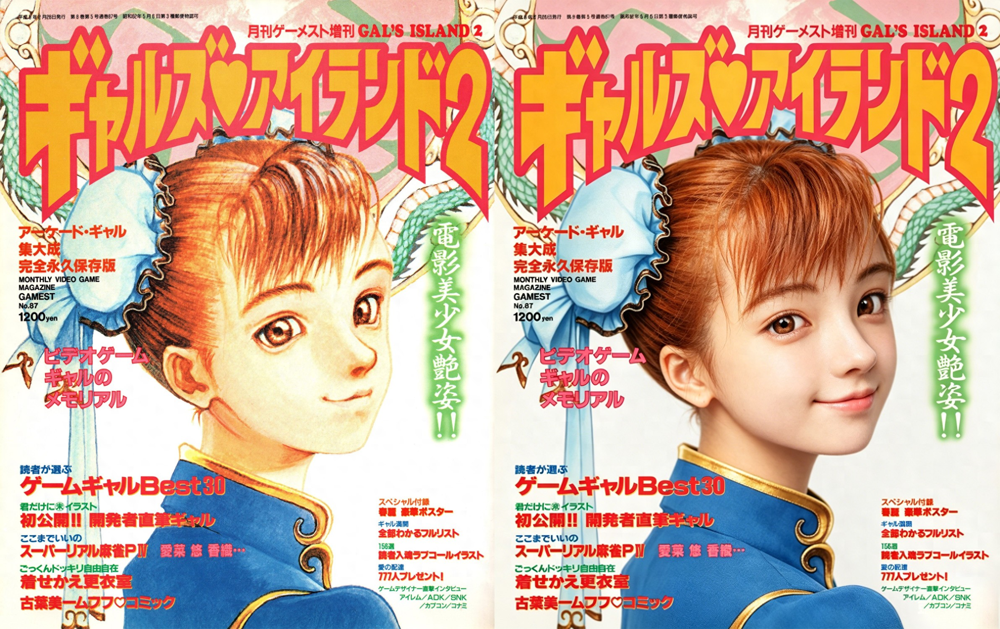

AI还原老插画反而被禁？卡普空三十年前的画作竟成烫
还记得第一次看到春丽那张‘惊为天人’的官方人设吗？那会儿我们穷，一张海报就能兴奋好几天。谁能想到，三十年后AI技术一键就能把老画高清化，甚至生成真人视频时，这张曾让我们膜拜的艺术品，反而成了“没法细看”的烫手山芋？CAPCOM插画师藏得真深？为何重制后的经典全撞枪口上了？今天聊聊这背后的尴尬。

在那个街机称霸的年代，谁要是能弄到一本带游戏插画的杂志，绝对就是全班最靓的仔。去同学家玩，看到他墙上贴的《七龙珠》或《拳皇》海报，腿都挪不动。如今年轻玩家网上什么美图没见过，根本体会不到咱们当年对一张官方人设图的渴望。那时候CAPCOM有西村绢，SNK有森气楼，他们的作品就是官方艺术的代名词。可当AI技术让这些老古董重获新生时，我们却发现了扎心的现实。
多年后通过AI软件把老插图高清化，本来挺过瘾，怀旧画风像活过来一样。特别是《少年街霸》时期的春丽，紧身裤线条当年模糊得看不清，如今一还原才发觉插画大师的笔触多讲究。那时的春丽表情坚毅却带着稚气，毕竟才十多岁。可到了《街头霸王3.3》时期她成为传授武艺的一代宗师，画风达到2D巅峰之后，味道就变了。大家把老图高清重制后细品，当年那些“粗枝大叶”的画法反倒藏着深意，可偏偏有些细节被揪出来说过不了审，整幅画都没法完整看。好好的艺术品，怎么就成了烫手的山芋？
说到底还是老派艺术没法复制。那会儿的画风是时代的巅峰，容不得半点魔改。后来《街头霸王IV》虽然成功开启了格斗游戏盛世，但粗腿设计明显为了迎合欧美玩家，当年亚洲玩家看着挺膈应。一对比才明白，卡普空早年的功力深不见底，每一张原画都是纯手工打磨出来的。如今AI技术确实厉害，却把当年那些朦胧的、留白的、属于那个时代滤镜下的笔触，无情地暴露在超清镜头下。这不光是画技的事，更是时代的滤镜。有些美，恰恰因为看不真切才刻骨铭心。
是啊！游戏厅那段无忧无虑的时光真的太奢侈了。如今我们已是不惑之年的“老玩家”，新游戏玩不起劲，唯有回望三十年前的经典插画才能找回当年的悸动。那么问题来了，你觉得这些被AI高清化后却“处境尴尬”的绝美神作，是该遗憾地保留原貌，还是该由官方出面给个说法？评论区聊聊你记忆中那张至今难忘的神级海报吧！
关于我们
📱 公众号名称：三天笔记
✍️ 作者：曾三天
扫码关注公众号，获取每日最新资讯

商务合作与版权
商务合作 / 内容投稿 / 品牌推广
请关注公众号「三天笔记」后台留言联系
版权声明：本文由作者整理，转载需注明出处。